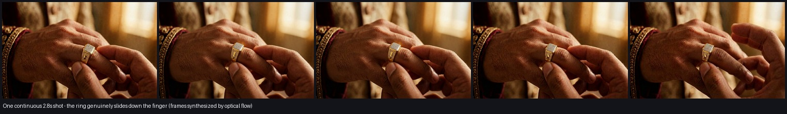

LATEST — REAL MOTION
The ring actually slides onto his finger
One continuous 2.8-second shot · no cuts · cost ₹0
Plays on loop. Watch the ring travel down the finger — those
in-between frames were synthesized, not photographed.
Download this clip
Frame by frame

How it's made, free: the image model re-renders the same photo with only
the ring's position changed (same hand, light and background), giving a few
keyframes. ffmpeg's optical-flow interpolation then invents every frame in
between. No API key, no GPU, no subscription.
Best for short simple movements — sliding on, a hand turning, fingers
flexing. Large motions would smear.
For comparison — the two earlier attempts you rejected
1st: pan over 4 catalogue stills
2nd: 6-beat story, but cuts not motion